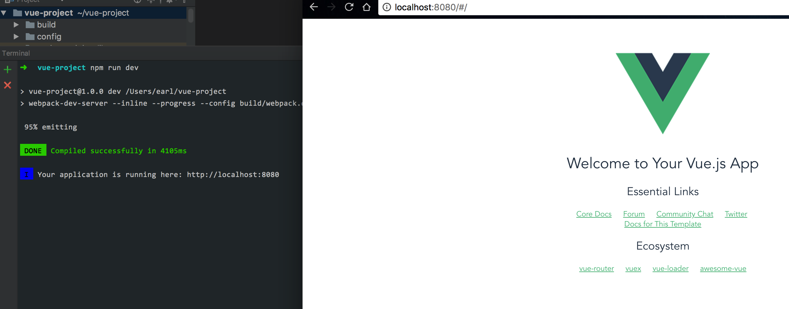

<!DOCTYPE HTML><html lang="zh-CN"><head><meta charset="UTF-8"><meta http-equiv="“Content-Security-Policy”" content="“upgrade-insecure-requests”/"><title>新建vue工程 | 农民艺术家</title><meta name="viewport" content="width=device-width,initial-scale=1,user-scalable=no"><meta name="author" content="earl"><meta name="description" content="先引入尤大的官网安装兼容性如果想在==不支持 IE8 及以下版本==使用vue的话，就不要往下看了，因为 Vue 使用了 IE8 无法模拟的 ECMAScript 5 特性。但它支持所有兼容 ECMAScript 5 的浏览器。引入安装文件CDN直接引入连接，可以指定版本
1&amp;lt;script src=&quot;https://cdn.jsdelivr.net/npm/vue@2.5.16/dist/v"><meta property="og:type" content="article"><meta property="og:title" content="新建vue工程"><meta property="og:url" content="http://xinliu.vip/xinliu/e68dff05/index.html"><meta property="og:site_name" content="农民艺术家"><meta property="og:description" content="先引入尤大的官网安装兼容性如果想在==不支持 IE8 及以下版本==使用vue的话，就不要往下看了，因为 Vue 使用了 IE8 无法模拟的 ECMAScript 5 特性。但它支持所有兼容 ECMAScript 5 的浏览器。引入安装文件CDN直接引入连接，可以指定版本
1&amp;lt;script src=&quot;https://cdn.jsdelivr.net/npm/vue@2.5.16/dist/v"><meta property="og:image" content="http://xinliu.vip/../../images/vue/install_vue-cli.png"><meta property="og:image" content="http://xinliu.vip/../../images/vue/new-vue-project.png"><meta property="og:image" content="http://xinliu.vip/../../images/vue/vue-project.png"><meta property="og:image" content="http://xinliu.vip/../../images/vue/run-vue.png"><meta property="og:image" content="http://xinliu.vip/../../images/vue/npm-element.png"><meta property="og:image" content="http://xinliu.vip/../../images/vue/vue-project-catalog.png"><meta property="og:updated_time" content="2019-03-21T03:34:38.128Z"><meta name="twitter:card" content="summary"><meta name="twitter:title" content="新建vue工程"><meta name="twitter:description" content="先引入尤大的官网安装兼容性如果想在==不支持 IE8 及以下版本==使用vue的话，就不要往下看了，因为 Vue 使用了 IE8 无法模拟的 ECMAScript 5 特性。但它支持所有兼容 ECMAScript 5 的浏览器。引入安装文件CDN直接引入连接，可以指定版本
1&amp;lt;script src=&quot;https://cdn.jsdelivr.net/npm/vue@2.5.16/dist/v"><meta name="twitter:image" content="http://xinliu.vip/../../images/vue/install_vue-cli.png"><link rel="alternative" href="/atom.xml" title="农民艺术家" type="application/atom+xml"><link rel="icon" href="/img/favicon.ico"><link rel="apple-touch-icon" href="/img/jacman.jpg"><link rel="apple-touch-icon-precomposed" href="/img/jacman.jpg"><link rel="stylesheet" href="/css/style.css"></head></html><body><header><div><div id="imglogo"><a href="/"></a></div><div id="textlogo"><h1 class="site-name"><a href="/" title="农民艺术家">农民艺术家</a></h1><h2 class="blog-motto">Keep Calm and Carry On</h2></div><div class="navbar"><a class="navbutton navmobile" href="#" title="菜单"></a></div><nav class="animated"><ul><ul><li><a href="/">主页</a></li><li><a href="/archives">归档</a></li><li><a href="/about">简介</a></li><li></li></ul></ul></nav></div></header><div id="container"><div id="main" class="post" itemscope itemprop="blogPost"><article itemprop="articleBody"><header class="article-info clearfix"><h1 itemprop="name"><a href="/xinliu/e68dff05/" title="新建vue工程" itemprop="url">新建vue工程</a></h1><p class="article-author">By <a href="/about" title="earl" target="_blank" itemprop="author">earl</a></p><p class="article-time"><span class="head-plus">阅读<i class="fa fa-user"></i><span id="busuanzi_value_page_pv"><i class="fa fa-spinner fa-spin"></i></span>次, </span><span class="head-plus"><i class="fa fa-comments"></i><span class="ds-thread-count" data-thread-key="xinliu/e68dff05/"><i class="fa fa-spinner fa-spin"></i></span> </span><time datetime="2018-06-03T08:50:57.000Z" itemprop="datePublished">发表于 2018-06-03</time></p></header><div class="article-content"><div id="toc" class="toc-article"><strong class="toc-title">文章目录</strong><ol class="toc"><li class="toc-item toc-level-2"><a class="toc-link" href="#安装"><span class="toc-number">1.</span> <span class="toc-text">安装</span></a><ol class="toc-child"><li class="toc-item toc-level-3"><a class="toc-link" href="#兼容性"><span class="toc-number">1.1.</span> <span class="toc-text">兼容性</span></a></li><li class="toc-item toc-level-3"><a class="toc-link" href="#引入安装文件"><span class="toc-number">1.2.</span> <span class="toc-text">引入安装文件</span></a><ol class="toc-child"><li class="toc-item toc-level-4"><a class="toc-link" href="#CDN"><span class="toc-number">1.2.1.</span> <span class="toc-text">CDN</span></a></li><li class="toc-item toc-level-4"><a class="toc-link" href="#NPM"><span class="toc-number">1.2.2.</span> <span class="toc-text">NPM</span></a></li></ol></li><li class="toc-item toc-level-3"><a class="toc-link" href="#新建工程"><span class="toc-number">1.3.</span> <span class="toc-text">新建工程</span></a></li><li class="toc-item toc-level-3"><a class="toc-link" href="#运行测试"><span class="toc-number">1.4.</span> <span class="toc-text">运行测试</span></a></li><li class="toc-item toc-level-3"><a class="toc-link" href="#引入element-ui"><span class="toc-number">1.5.</span> <span class="toc-text">引入element-ui</span></a></li><li class="toc-item toc-level-3"><a class="toc-link" href="#项目目录划分"><span class="toc-number">1.6.</span> <span class="toc-text">项目目录划分</span></a></li></ol></li></ol></div><p><a href="https://cn.vuejs.org/" target="_blank" rel="external">先引入尤大的官网</a></p><h2 id="安装"><a href="#安装" class="headerlink" title="安装"></a>安装</h2><h3 id="兼容性"><a href="#兼容性" class="headerlink" title="兼容性"></a>兼容性</h3><p>如果想在==不支持 IE8 及以下版本==使用vue的话，就不要往下看了，因为 Vue 使用了 IE8 无法模拟的 ECMAScript 5 特性。但它支持所有<a href="https://caniuse.com/#feat=es5" target="_blank" rel="external">兼容 ECMAScript 5 的浏览器</a>。</p><h3 id="引入安装文件"><a href="#引入安装文件" class="headerlink" title="引入安装文件"></a>引入安装文件</h3><h4 id="CDN"><a href="#CDN" class="headerlink" title="CDN"></a>CDN</h4><pre><code>直接引入连接，可以指定版本
</code></pre><figure class="highlight javascript"><table><tr><td class="gutter"><pre><div class="line">1</div></pre></td><td class="code"><pre><div class="line">&lt;script src=<span class="string">"https://cdn.jsdelivr.net/npm/vue@2.5.16/dist/vue.js"</span>&gt;<span class="xml"><span class="tag">&lt;/<span class="name">script</span>&gt;</span></span></div></pre></td></tr></table></figure><h4 id="NPM"><a href="#NPM" class="headerlink" title="NPM"></a>NPM</h4><pre><code>在用 Vue 构建大型应用时推荐使用 NPM 安装
</code></pre><figure class="highlight plain"><table><tr><td class="gutter"><pre><div class="line">1</div><div class="line">2</div></pre></td><td class="code"><pre><div class="line"># 最新稳定版</div><div class="line">sudo npm install -g vue-cli</div></pre></td></tr></table></figure><p></p><h3 id="新建工程"><a href="#新建工程" class="headerlink" title="新建工程"></a>新建工程</h3><figure class="highlight plain"><table><tr><td class="gutter"><pre><div class="line">1</div></pre></td><td class="code"><pre><div class="line">vue init webpack vue-project</div></pre></td></tr></table></figure><p><br></p><ul><li><p>? Project name ==输入项目名称==</p></li><li><p>? Project description ==输入项目描述==</p></li><li><p>? Author ==作者==</p></li><li><p>? Vue build ==打包方式，回车就好了==</p></li><li><p>? Install vue-router? ==使用vue-router==</p></li><li><p>? Use ESLint to lint your code? ==ESLint代码规范==</p></li><li><p>? Setup unit tests with Karma + Mocha? ==单元测试==</p></li><li><p>? Setup e2e tests with Nightwatch? ==E2E测试==</p></li></ul><h3 id="运行测试"><a href="#运行测试" class="headerlink" title="运行测试"></a>运行测试</h3><p>运行看看，项目是否正常！<br><br>看来是起来了</p><h3 id="引入element-ui"><a href="#引入element-ui" class="headerlink" title="引入element-ui"></a>引入element-ui</h3><p>引入UI框架，可以让你快速搭建自己的工程<br>1、安装 element-ui</p><figure class="highlight plain"><table><tr><td class="gutter"><pre><div class="line">1</div></pre></td><td class="code"><pre><div class="line">npm i element-ui -S</div></pre></td></tr></table></figure><p></p><p>2、项目中引入 element-ui<br>在main.js 中引入</p><figure class="highlight javascript"><table><tr><td class="gutter"><pre><div class="line">1</div><div class="line">2</div><div class="line">3</div><div class="line">4</div><div class="line">5</div><div class="line">6</div><div class="line">7</div><div class="line">8</div><div class="line">9</div><div class="line">10</div><div class="line">11</div><div class="line">12</div><div class="line">13</div><div class="line">14</div><div class="line">15</div></pre></td><td class="code"><pre><div class="line"><span class="keyword">import</span> Vue <span class="keyword">from</span> <span class="string">'vue'</span></div><div class="line"><span class="keyword">import</span> App <span class="keyword">from</span> <span class="string">'./App'</span></div><div class="line"><span class="keyword">import</span> router <span class="keyword">from</span> <span class="string">'./router'</span></div><div class="line"><span class="keyword">import</span> ElementUI <span class="keyword">from</span> <span class="string">'element-ui'</span></div><div class="line"><span class="keyword">import</span> <span class="string">'element-ui/lib/theme-chalk/index.css'</span></div><div class="line"></div><div class="line">Vue.use(ElementUI)</div><div class="line"></div><div class="line"><span class="comment">/* eslint-disable no-new */</span></div><div class="line"><span class="keyword">new</span> Vue(&#123;</div><div class="line">  el: <span class="string">'#app'</span>,</div><div class="line">  router,</div><div class="line">  components: &#123; App &#125;,</div><div class="line">  template: <span class="string">'&lt;App/&gt;'</span></div><div class="line">&#125;)</div></pre></td></tr></table></figure><p>运行看看，如果没有报错，说明安装成功。如果报错，看看是否安装element-ui正确，或重新安装。</p><h3 id="项目目录划分"><a href="#项目目录划分" class="headerlink" title="项目目录划分"></a>项目目录划分</h3><p>工程新建好了，开始做一些工程优化，区分目录，便于更好管理</p><p></p><figure class="highlight"><table><tr><td class="gutter"><pre><div class="line">1</div><div class="line">2</div><div class="line">3</div><div class="line">4</div><div class="line">5</div><div class="line">6</div><div class="line">7</div><div class="line">8</div><div class="line">9</div><div class="line">10</div><div class="line">11</div><div class="line">12</div><div class="line">13</div><div class="line">14</div><div class="line">15</div><div class="line">16</div><div class="line">17</div><div class="line">18</div><div class="line">19</div><div class="line">20</div><div class="line">21</div><div class="line">22</div><div class="line">23</div><div class="line">24</div><div class="line">25</div><div class="line">26</div></pre></td><td class="code"><pre><div class="line">├── node_modules               // node 命令行构建工具 </div><div class="line">├── build                      // 构建相关  </div><div class="line">├── config                     // 配置相关</div><div class="line">├── src</div><div class="line">│   ├── api                    // view界面</div><div class="line">│   │    ├── api               // 所有请求</div><div class="line">│   ├── components             // 全局UI组件</div><div class="line">│   ├── config                 // 网络配置文件</div><div class="line">│   │    ├── http              // 网络拦截器</div><div class="line">│   │    ├──url                // 域名</div><div class="line">│   ├── router                 // 路由</div><div class="line">│   ├── store                  // 全局store管理</div><div class="line">│   ├── utils                  // 全局公用方法</div><div class="line">│   ├── page                   // view界面</div><div class="line">│   ├── App.vue                // 入口页面</div><div class="line">│   └── main.js                // 入口 加载组件 初始化等</div><div class="line">├── static                     // 静态资源</div><div class="line">│   ├── img                    // img</div><div class="line">│   ├── css                    // css</div><div class="line">│   ├── js                     // js</div><div class="line">├── .babelrc                   // babel-loader 配置</div><div class="line">├── eslintrc.js                // eslint 配置项</div><div class="line">├── .gitignore                 // git 忽略项</div><div class="line">├── favicon.ico                // favicon图标</div><div class="line">├── index.html                 // html模板</div><div class="line">└── package.json               // package.json</div></pre></td></tr></table></figure></div><footer class="article-footer clearfix"><div class="article-catetags"><div class="article-categories"><span></span> <a class="article-category-link" href="/categories/vue/">vue</a></div><div class="article-tags"><span></span> <a href="/tags/vue/">vue</a></div></div><div class="article-share" id="share"><div class="share-jiathis"><div class="jiathis_style_24x24"><a class="jiathis_button_tsina"></a> <a class="jiathis_button_weixin"></a> <a class="jiathis_button_renren"></a> <a class="jiathis_button_qzone"></a> <a class="jiathis_button_googleplus"></a> <a class="jiathis_button_douban"></a> <a href="http://www.jiathis.com/share" class="jiathis jiathis_txt jtico jtico_jiathis" target="_blank"></a> <a class="jiathis_counter_style"></a></div><script type="text/javascript">var jiathis_config={
    data_track_clickback:true,
    sm:"copy,renren,cqq",
    pic:"",
    summary:"",</script><script type="text/javascript" src="//v3.jiathis.com/code/jia.js?uid=" charset="utf-8"></script></div></div><div class="article-share" id="share"><div class="share-jiathis"><div class="jiathis_style_24x24"><a class="jiathis_button_tsina"></a> <a class="jiathis_button_weixin"></a> <a class="jiathis_button_renren"></a> <a class="jiathis_button_qzone"></a> <a class="jiathis_button_googleplus"></a> <a class="jiathis_button_douban"></a> <a href="http://www.jiathis.com/share" class="jiathis jiathis_txt jtico jtico_jiathis" target="_blank"></a> <a class="jiathis_counter_style"></a></div><script type="text/javascript">var jiathis_config={
    data_track_clickback:true,
    sm:"copy,renren,cqq",
    pic:"",
    summary:"",</script><script type="text/javascript" src="//v3.jiathis.com/code/jia.js?uid=" charset="utf-8"></script></div></div></footer></article><nav class="article-nav clearfix"><div class="prev"><a href="/xinliu/3972e615/" title="添加登录权限验证"><strong>上一篇：</strong><br><span>添加登录权限验证</span></a></div><div class="next"><a href="/xinliu/1c61a886/" title="Web前端开发规范手册"><strong>下一篇：</strong><br><span>Web前端开发规范手册</span></a></div></nav><div id="lv-container" data-id="city" data-uid="MTAyMC8zMzQ2Ny8xMDAyMw=="><script type="text/javascript">!function(e,t){var n,c=e.getElementsByTagName(t)[0];"function"!=typeof LivereTower&&((n=e.createElement(t)).src="https://cdn-city.livere.com/js/embed.dist.js",n.async=!0,c.parentNode.insertBefore(n,c))}(document,"script")</script><noscript>为正常使用来必力评论功能请激活JavaScript</noscript></div></div><div class="openaside"><a class="navbutton" href="#" title="显示侧边栏"></a></div><div id="toc" class="toc-aside"><strong class="toc-title">文章目录</strong><ol class="toc"><li class="toc-item toc-level-2"><a class="toc-link" href="#安装"><span class="toc-number">1.</span> <span class="toc-text">安装</span></a><ol class="toc-child"><li class="toc-item toc-level-3"><a class="toc-link" href="#兼容性"><span class="toc-number">1.1.</span> <span class="toc-text">兼容性</span></a></li><li class="toc-item toc-level-3"><a class="toc-link" href="#引入安装文件"><span class="toc-number">1.2.</span> <span class="toc-text">引入安装文件</span></a><ol class="toc-child"><li class="toc-item toc-level-4"><a class="toc-link" href="#CDN"><span class="toc-number">1.2.1.</span> <span class="toc-text">CDN</span></a></li><li class="toc-item toc-level-4"><a class="toc-link" href="#NPM"><span class="toc-number">1.2.2.</span> <span class="toc-text">NPM</span></a></li></ol></li><li class="toc-item toc-level-3"><a class="toc-link" href="#新建工程"><span class="toc-number">1.3.</span> <span class="toc-text">新建工程</span></a></li><li class="toc-item toc-level-3"><a class="toc-link" href="#运行测试"><span class="toc-number">1.4.</span> <span class="toc-text">运行测试</span></a></li><li class="toc-item toc-level-3"><a class="toc-link" href="#引入element-ui"><span class="toc-number">1.5.</span> <span class="toc-text">引入element-ui</span></a></li><li class="toc-item toc-level-3"><a class="toc-link" href="#项目目录划分"><span class="toc-number">1.6.</span> <span class="toc-text">项目目录划分</span></a></li></ol></li></ol></div><div id="asidepart"><div class="closeaside"><a class="closebutton" href="#" title="隐藏侧边栏"></a></div><aside class="clearfix"><div style="width:300px;height:150px;transform:scale(.7);margin:0;margin-left:-50px;margin-bottom:-65px;margin-top:10px"><iframe frameborder="no" border="0" marginwidth="0" marginheight="0" width="330" height="86" src="//music.163.com/outchain/player?type=2&id=355992&auto=0&height=66"></iframe></div><div class="github-card"><p class="asidetitle">Github</p><div class="github-card" data-github="EARL8888" data-theme="medium"></div><script type="text/javascript" src="//cdn.jsdelivr.net/github-cards/latest/widget.js"></script></div><div class="categorieslist"><p class="asidetitle">分类</p><ul><li><a href="/categories/Android/" title="Android">Android<sup>5</sup></a></li><li><a href="/categories/AngularJS-01/" title="AngularJS_01">AngularJS_01<sup>1</sup></a></li><li><a href="/categories/CSS/" title="CSS">CSS<sup>1</sup></a></li><li><a href="/categories/Ionic/" title="Ionic">Ionic<sup>1</sup></a></li><li><a href="/categories/git/" title="git">git<sup>1</sup></a></li><li><a href="/categories/gulp/" title="gulp">gulp<sup>1</sup></a></li><li><a href="/categories/hexo/" title="hexo">hexo<sup>10</sup></a></li><li><a href="/categories/java/" title="java">java<sup>1</sup></a></li><li><a href="/categories/vue/" title="vue">vue<sup>2</sup></a></li><li><a href="/categories/前端开发规范手册/" title="前端开发规范手册">前端开发规范手册<sup>1</sup></a></li></ul></div><div class="tagslist"><p class="asidetitle">标签</p><ul class="clearfix"><li><a href="/tags/hexo/" title="hexo">hexo<sup>10</sup></a></li><li><a href="/tags/Android/" title="Android">Android<sup>5</sup></a></li><li><a href="/tags/vue/" title="vue">vue<sup>2</sup></a></li><li><a href="/tags/AngularJS-01/" title="AngularJS_01">AngularJS_01<sup>1</sup></a></li><li><a href="/tags/CSS/" title="CSS">CSS<sup>1</sup></a></li><li><a href="/tags/Ionic/" title="Ionic">Ionic<sup>1</sup></a></li><li><a href="/tags/java/" title="java">java<sup>1</sup></a></li><li><a href="/tags/gulp/" title="gulp">gulp<sup>1</sup></a></li><li><a href="/tags/git/" title="git">git<sup>1</sup></a></li><li><a href="/tags/前端开发规范手册/" title="前端开发规范手册">前端开发规范手册<sup>1</sup></a></li></ul></div><div class="linkslist"><p class="asidetitle">友情链接</p><ul><li><a href="http://www.cnblogs.com/earl-yongchang/" target="_blank" title=" 以前写作博客">博客园</a></li><li><a href="http://www.infoq.com/cn/" target="_blank" title=" 促进软件开发领域知识与创新的传播">InfoQ</a></li><li><a href="https://sdk.cn/" target="_blank" title=" 中国领先的开发者服务">开发者服务</a></li><li><a href="https://www.cnblogs.com/TomXu/archive/2011/12/15/2288411.html#undefined 深入理解JavaScript系列文章" target="_blank" title="汤姆大叔">汤姆大叔</a></li></ul></div><div class="weiboshow"><p class="asidetitle">新浪微博</p><iframe width="100%" height="119" class="share_self" frameborder="0" scrolling="no" src="http://widget.weibo.com/weiboshow/index.php?language=&width=0&height=119&fansRow=2&ptype=1&speed=0&skin=9&isTitle=1&noborder=1&isWeibo=0&isFans=0&uid=5807798537&verifier=5fcd6856&dpc=1"></iframe></div></aside></div></div><footer><div id="footer"><div class="line"><span></span><div class="author"></div></div><section class="info"><p>Keep Calm<br>Carry On</p></section><div class="social-font" class="clearfix"><a href="http://weibo.com/5807798537" target="_blank" class="icon-weibo" title="微博"></a> <a href="https://github.com/EARL8888" target="_blank" class="icon-github" title="github"></a> <a href="mailto:z604458675@gmail.com" target="_blank" class="icon-email" title="Email Me"></a></div></div><div class="footer-text"><p class="copyright"><a href="/about" target="_blank" title="earl">earl | 农民艺术家</a> Copyright © 2019</p><span id="busuanzi_container_site_uv">本站访客数 <span id="busuanzi_value_site_uv"></span> 人次<p><a style="color:#fff" href="http://www.miitbeian.gov.cn/" target="_blank">京ICP备19006937号-1</a></p></span></div><script async src="https://dn-lbstatics.qbox.me/busuanzi/2.3/busuanzi.pure.mini.js"></script></footer><script src="/js/jquery-2.0.3.min.js"></script><script src="/js/jquery.imagesloaded.min.js"></script><script src="/js/gallery.js"></script><script src="/js/jquery.qrcode-0.12.0.min.js"></script><script type="text/javascript">$(document).ready(function(){$(".navbar").click(function(){$("header nav").toggleClass("shownav")});var e=0,s=$("#main"),n=$("#asidepart"),a=$(".closeaside"),o=$(".openaside");a.click(function(){n.addClass("fadeOut").css("display","none"),o.css("display","block").addClass("fadeIn"),s.addClass("moveMain")}),o.click(function(){o.css("display","none").removeClass("beforeFadeIn"),n.css("display","block").removeClass("fadeOut").addClass("fadeIn"),s.removeClass("moveMain")}),$(window).scroll(function(){o.css("top",Math.max(80,260-$(this).scrollTop()))}),$(window).resize(function(){"number"==typeof window.innerWidth?e=window.innerWidth:document.documentElement&&document.documentElement.clientWidth&&(e=document.documentElement.clientWidth),1024<=e?$("header nav").removeClass("shownav"):(s.removeClass("moveMain"),n.css("display","block").removeClass("fadeOut"),o.css("display","none"),$("#toc.toc-aside").css("display","none"))})})</script><script type="text/javascript">$(document).ready(function(){var c=$(".article-content>iframe"),n=$(".article-content>embed"),o=($("#toc"),$("#toc.toc-aside")),e=$(".openaside"),i=$(".closeaside");0<c.length&&c.wrap('<div class="video-container" />'),0<n.length&&n.wrap('<div class="video-container" />'),i.click(function(){o.css("display","block").addClass("fadeIn")}),e.click(function(){o.css("display","none")}),$(window).scroll(function(){o.css("top",Math.max(140,320-$(this).scrollTop()))})})</script><link rel="stylesheet" href="/fancybox/jquery.fancybox.css" media="screen" type="text/css"><script src="/fancybox/jquery.fancybox.pack.js"></script><script type="text/javascript">$(document).ready(function(){$(".article-content").each(function(a){$(this).find("img").each(function(){if(!$(this).parent().hasClass("fancybox")){var a=this.alt;a&&$(this).after('<span class="caption">'+a+"</span>"),$(this).wrap('<a href="'+this.src+'" title="'+a+'" class="fancybox"></a>')}}),$(this).find(".fancybox").each(function(){$(this).attr("rel","article"+a)})}),$.fancybox&&$(".fancybox").fancybox()})</script><script>var _hmt=_hmt||[];!function(){var e=document.createElement("script");e.src="https://hm.baidu.com/hm.js?13fd776f810bd0d42243353eab26fad6";var t=document.getElementsByTagName("script")[0];t.parentNode.insertBefore(e,t)}()</script><div id="totop"><a title="返回顶部"></a></div><script src="/js/totop.js"></script></body>